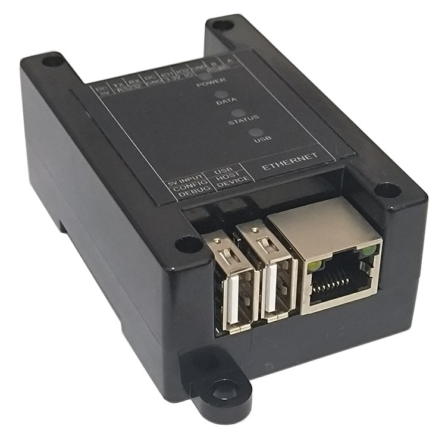
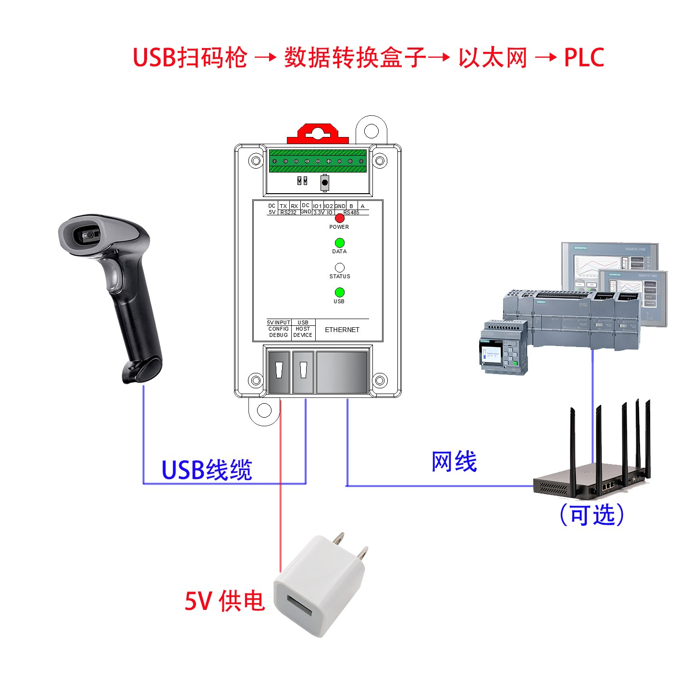
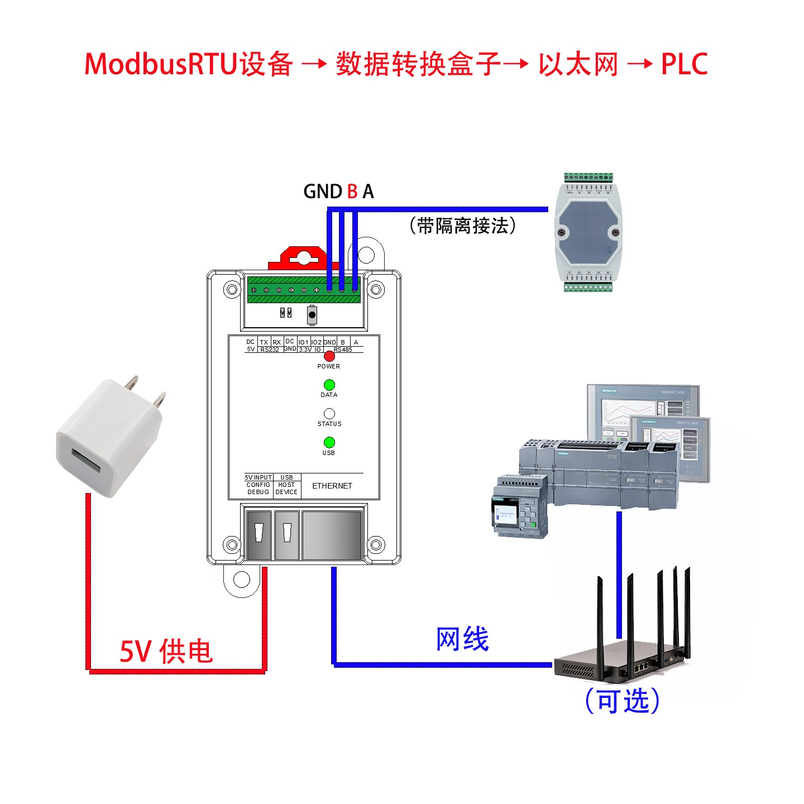
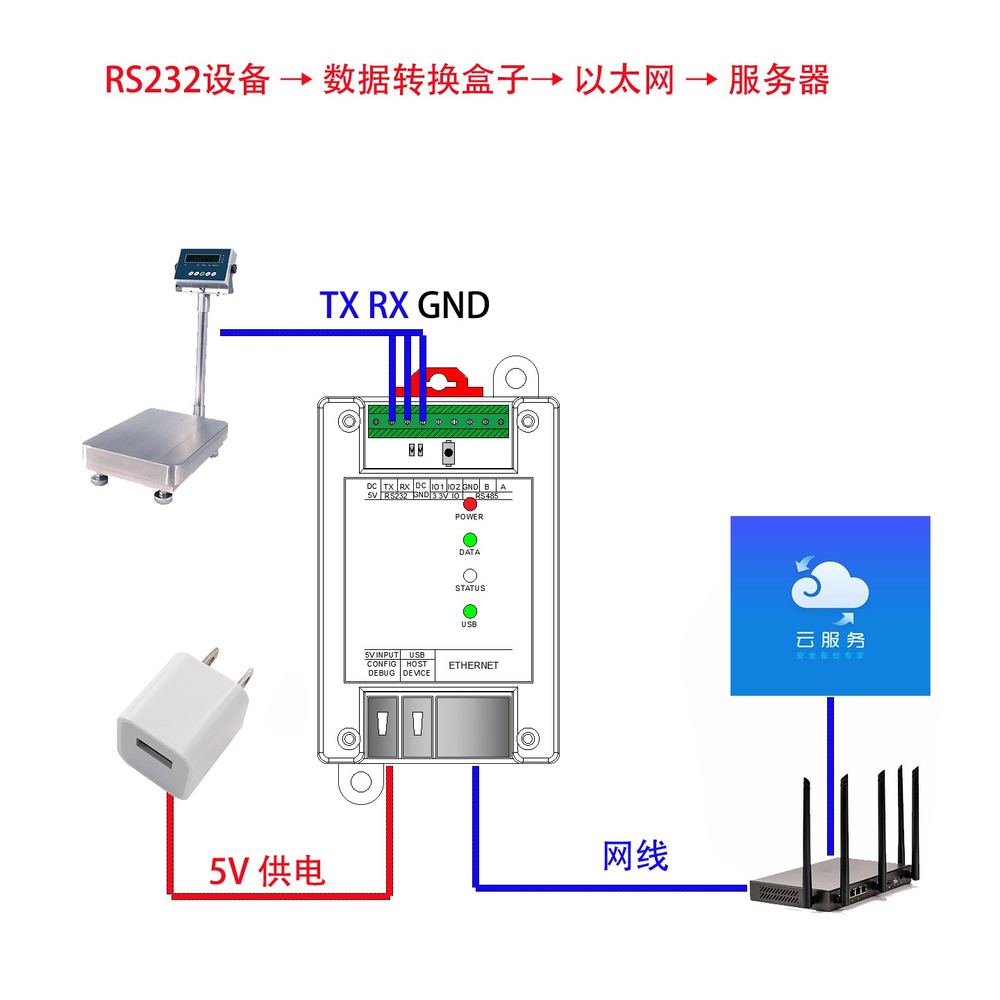
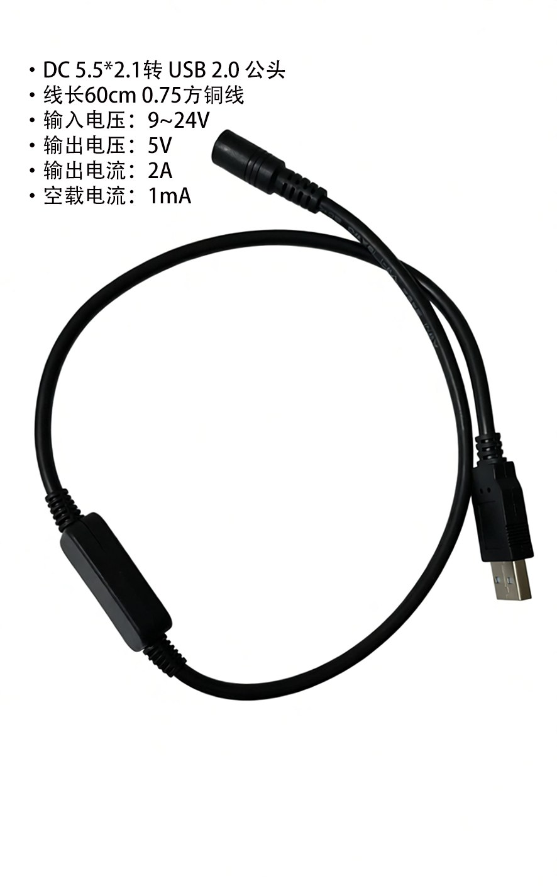
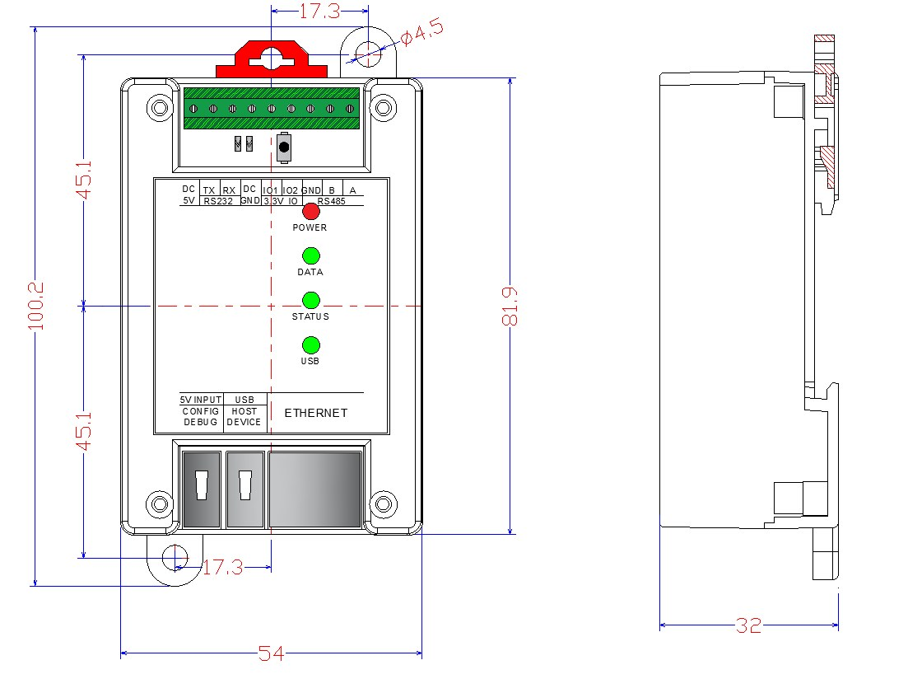
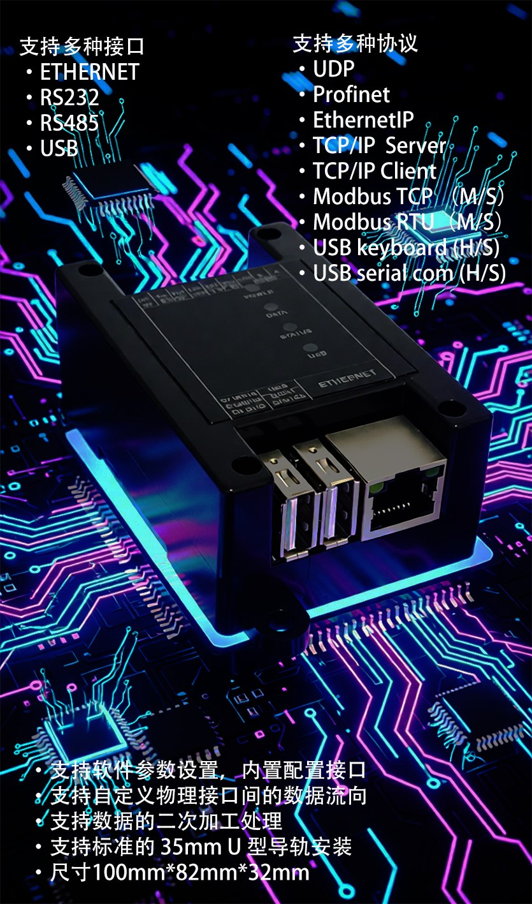

多协议工业数据转换网关
USB · 以太网 · RS485 · RS232 · IO 五类接口任意互通， 支持 Modbus RTU/TCP（主/从）、Profinet 从站、EtherNet/IP 从站 与 TCP/UDP 透传。 Putty 菜单式配置，无需编程，5 分钟上手。

每种协议转换都要单独买一台设备？成本高、配电柜塞不下、调试改程序改到头疼——
扫码枪走 USB，上位系统走 Modbus；Siemens PLC 用 Profinet，车间老设备只认 Modbus RTU。
RS485 / RS232 串口设备的数据需要上报 MES / ERP / 云平台，缺少简单可靠的联网方案。
进口网关动辄 ¥3,000 起；每种协议各买一台转换器，成本和柜内空间双重压力。
数据格式不匹配，改 PLC 程序、写上位机脚本，现场调试费时费力。
数据转换盒子，一台搞定所有协议互通。
覆盖工业现场最常见的连接需求，支持自定义物理接口间的数据流向
主机模式直读 USB 扫码枪、HID 键盘等设备；从机模式作为虚拟串口（CDC）连接 PC，同价位罕见的配置。
10/100M 自适应，支持 TCP/IP Server/Client、UDP、Modbus TCP、Profinet 从站、EtherNet/IP 从站。
内置光电隔离电路，抵御工业现场电磁干扰与地电位差，支持 Modbus RTU 主/从模式。
5V 逻辑电平（TX/RX），对接电子秤、仪器仪表等传统串口设备。
3.3V 逻辑电平，可直连 MCU / 嵌入式控制器，方便二次开发与逻辑电平调试。
Putty 终端菜单式配置，全中文界面，无需安装驱动或专用配置软件，会敲键盘就会配置。
Modbus 完整支持主站与从站双向模式，既可当"桥梁"也可当"采集器"
| 协议 | 角色 | 说明 |
|---|---|---|
| Modbus RTU | 主站 / 从站 | RS485 通信，可主动轮询采集，也可被动响应上位系统 |
| Modbus TCP | 主站 / 从站 | 以太网通信，主/从双向灵活切换 |
| Profinet | 从站 | 兼容 GSD 文件，直连 Siemens 全系列 PLC（S7-300/1200/1500 等） |
| EtherNet/IP | 从站 | 兼容 EDS 文件，直连 Allen-Bradley / Rockwell PLC |
| TCP/IP | Server / Client | 原始 Socket 双向数据透传 |
| UDP | 收发 | 原始 Socket 双向数据透传 |
| USB Keyboard | 主机 / 从机 | 读取 USB HID 键盘类设备（扫码枪等）数据 |
| USB Serial Com | 主机 / 从机 | 虚拟 CDC 串口，连接 PC / HMI |
市面上的协议网关清一色"串口 + 网口"。数据转换盒子独有 USB 主机/从机双模：主机模式直接读取 USB 扫码枪、HID 设备数据；从机模式作为虚拟串口连接 PC。一个 USB 口，解决"USB 设备接入工业系统"这个被多数竞品忽视的真实需求。
多数竞品的 Modbus 仅支持从站模式——只能被动等待读取。本产品 Modbus RTU 与 Modbus TCP 均同时支持主站和从站：从站模式接入 PLC 被轮询，主站模式主动轮询下位设备采集数据后转发。
数据多了前缀？需要补回车换行？不用改 PLC 程序、不用写脚本——设备内置数据编辑功能：前缀/后缀添加、字符插入/删除、查找替换、字段提取输出，像用文本编辑器一样处理工业数据流。
RS485 内置光电隔离，抵御现场电磁干扰与地电位差；35mm 标准 U 型 DIN 导轨安装，直接入配电柜；Putty 中文菜单配置，5 分钟上手，现场维护零软件依赖。
接上就用，配置约 5 分钟

需求：仓库 / 产线的 USB 扫码枪需要将条码数据实时传送到 Modbus TCP 或 Profinet 上位系统。
接线：USB 扫码枪 → 数据转换盒子（USB 口）→ 以太网 → 上位机 / PLC，5V 供电。
适合：仓储物流追溯、产线扫码工站、超市后台库存管理。

需求：车间原有 Modbus RTU 设备需要接入 Siemens S7-1200/1500（Profinet 网络）。
接线：Modbus RTU 设备 → 数据转换盒子（RS485 A/B，光电隔离）→ 以太网 → PLC。
配置：导入随盒 GSD 文件，在 TIA Portal 中添加设备、配置 IO 映射即可。

需求：RS232 / RS485 串口设备（电子秤、仪表等）的数据需要通过以太网上报 MES / SCADA / 云平台。
接线：串口设备（TX/RX/GND）→ 数据转换盒子 → 以太网 → 服务器 / 云。
配置：Putty 菜单设置目标 IP 与端口，选择 TCP/UDP 透传或 Modbus TCP，还可用数据编辑功能直接规范数据格式。
Modbus 或串口设备 → 数据转换盒子 → 以太网 → Allen-Bradley ControlLogix / CompactLogix。导入随盒 EDS 文件，Studio 5000 直接扫描添加。适合外企工厂、混品牌 PLC 环境。
PC（USB 虚拟串口）+ 被测设备（RS485/RS232）→ 数据转换盒子 → 以太网 → 模拟上位机。IO 接口直连 MCU 调试逻辑电平，一台设备承担多协议抓包、转发与注入。适合研发实验室与测试台架。
用 USB 线将数据转换盒子的 CONFIG 口连接电脑
打开 Putty 进入中文菜单，选择输入/输出端口，设置协议参数
保存并重启，指示灯确认状态，数据即刻互通

现场只有 9~24V 直流电源？选配这条供电线即可直接取电：输入 9~24V，稳定输出 5V / 2A，60cm 线长，空载电流仅 1mA，无需额外配置 5V 电源。
| 产品名称 | 数据转换盒子（工业多协议网关） |
|---|---|
| USB 接口 | USB 2.0，主机/从机双模，支持 HID 键盘类设备与虚拟 CDC 串口 |
| 以太网接口 | RJ45，10/100M 自适应 |
| RS232 接口 | 5V 逻辑，TX / RX |
| RS485 接口 | 内置光电隔离，支持 Modbus RTU 主/从 |
| IO 接口 | 3.3V 逻辑电平，可直连 MCU（默认断开，焊接 0Ω 电阻启用） |
| CONFIG 接口 | 5V，Putty 终端菜单配置 |
| 支持协议 | Modbus RTU（主/从）、Modbus TCP（主/从）、Profinet（从站）、EtherNet/IP（从站）、TCP/IP Server/Client、UDP |
| 配置方式 | Putty 终端菜单配置，中文界面 |
| 数据编辑 | 前缀/后缀添加、字符插入/删除、查找替换、字段提取输出 |
| 指示灯 | 电源（红）、数据（绿）、状态（绿）、USB（绿） |
| 安装方式 | 35mm 标准 U 型 DIN 导轨 |
| 外形尺寸 | 约 100 × 82 × 32 mm（含安装耳） |
| 供电 | DC 5V（可选 9~24V 输入转 5V 供电线） |
| 工作温度 | 0℃ ~ +50℃ |
| 随附文件 | GSD（Profinet）、EDS（EtherNet/IP）、快速使用指南、各协议使用说明 |

| 功能 | 数据转换盒子 | 同价位竞品 A | 同价位竞品 B |
|---|---|---|---|
| Modbus RTU | 主站 + 从站 | 仅从站 | 仅从站 |
| Modbus TCP | 主站 + 从站 | 仅从站 | 不支持 |
| Profinet 从站 | ✓ | ✓ | ✓ |
| EtherNet/IP 从站 | ✓ | ✗ | ✗ |
| USB 接口 | 主机 + 从机双模 | 无 | 无 |
| 内置数据编辑 | ✓ | ✗ | ✗ |
| RS485 隔离 | 光电隔离 | 有 | 无 |
| 配置方式 | 中文菜单 | 英文软件 | 英文软件 |
相同甚至更低的价格，多出 EtherNet/IP、USB 双模接口、数据编辑与 Modbus 主站模式。
GSD / EDS 配置文件与全套产品文档，随盒同步提供
当前版本每个接口支持连接一台设备，例如 RS485 接口连接一台 Modbus RTU 从机、USB 接口连接一台扫码枪。如需多设备连接，欢迎联系我们了解后续版本计划。
当前版本 Profinet 与 EtherNet/IP 仅支持从站模式（作为被 PLC 主站扫描的从设备）。Modbus RTU 与 Modbus TCP 则同时支持主站与从站模式。
完全不需要编程。使用免费的 Putty 通过终端菜单配置，全程中文界面，选择端口和协议参数后保存即可，首次配置约 5–10 分钟。
有。RS485 接口内置光电隔离电路，可有效防止工业现场的电磁干扰和地电位差对设备造成损坏。
Profinet 从站兼容 Siemens 全系列 PLC（S7-300 / S7-1200 / S7-1500 等）；EtherNet/IP 从站兼容 Allen-Bradley / Rockwell PLC；Modbus TCP/RTU 主从模式兼容几乎所有支持 Modbus 的品牌。
支持 35mm 标准 U 型 DIN 导轨安装，可直接安装于配电柜，外形尺寸约 100 × 82 × 32 mm（含安装耳）。
提供售前技术咨询与售后使用支持，技术问题请发邮件至 explore-E@foxmail.com，我们会在 24 小时内回复。
整机质保 1 年，非人为损坏免费维修或更换。
欢迎系统集成商、代理商与设备厂商洽谈合作，提供技术方案支持与项目定制服务。
| 采购数量 | 单价 |
|---|---|
| 1 台 | ¥699 |
| 2–4 台 | ¥659 / 台 |
| 5–9 台 | ¥629 / 台 |
| 10 台以上 | ¥599 / 台 |
批量采购请直接邮件沟通价格与交期
邮件联系我们：explore-E@foxmail.com